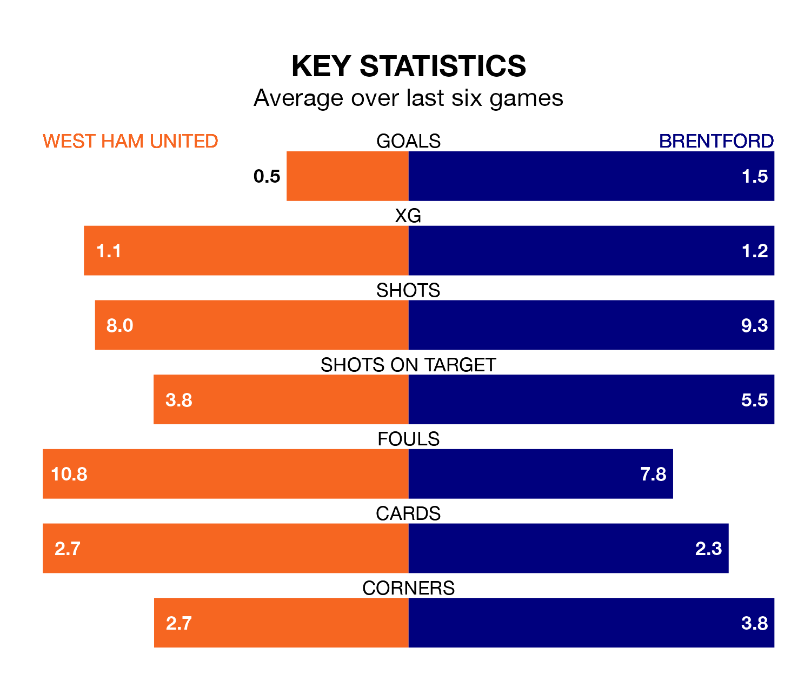

West Ham United welcome Brentford to the London Stadium on late Monday looking to pick up points to end their three-game losing streak.
West Ham's struggles have left them with just three points from their last six Premier League matches, while their opponents have earned six from a possible 18.
In the last 10 years, West Ham and Brentford have played each other on six occasions. West Ham won one of them and Brentford the other.
On average, the Hammers scored 0.7 goals and the Bees 1.8 in those matches.
Their last meeting was on November 4, when Brentford won 3-2 at home.
With 35 goals in 25 games so far this season, Brentford are scoring at below the league average rate with 1.4 goals per game. And they are conceding more than average, letting in 44 goals at a rate of 1.8 per game.
West Ham are also below average scorers, with 1.4 goals per game, compared to a league average of 1.6. They have conceded 1.8 goals per game.
The Bees are 15th in the table after 25 games, of which they have won seven and drawn four, earning 25 points.
United are six places ahead of the away team in ninth, with 10 wins and six draws putting them on 36 points.
In Jarrod Bowen, the Hammers have one of the league's most on-form strikers so far this season. He has notched 11 goals in 24 appearances, to sit seventh in the scoring charts.
His goal rate of one every 196 minutes is slightly quicker than that of Bryan Mbeumo, Brentford's top scorer with a goal every 184 minutes, and a total of seven goals in 15 games.
West Ham's last match was on February 17, a 2-0 loss against Nottingham Forest.
Brentford lost 1-0 against Manchester City last time out, on Tuesday.
Monday's match will be refereed by Simon Hooper, who has taken charge of 15 Premier League games so far this season, issuing three red cards and booking 76 players. He has not awarded any penalties.
The last West Ham game Hooper refereed was a 2-0 home win against Manchester United on December 23. His last Brentford match was their 2-0 win away at Wolverhampton Wanderers on February 10.
Updated: 10:08 (UTC), 23/02/24